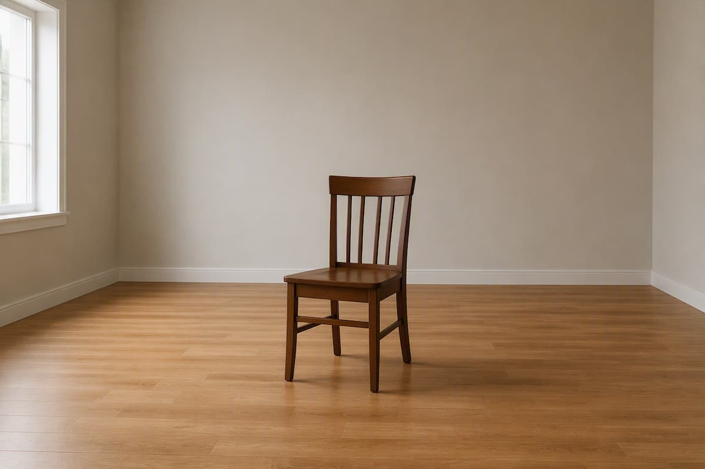
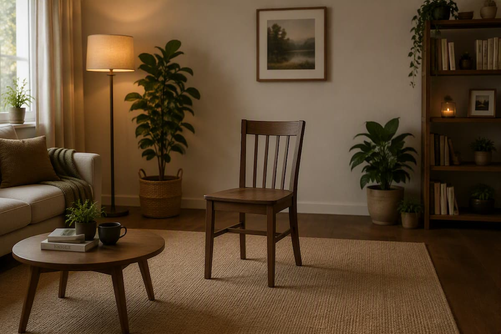
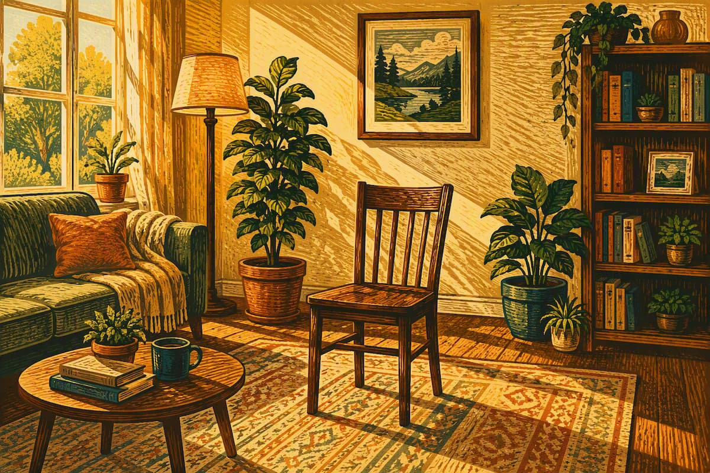
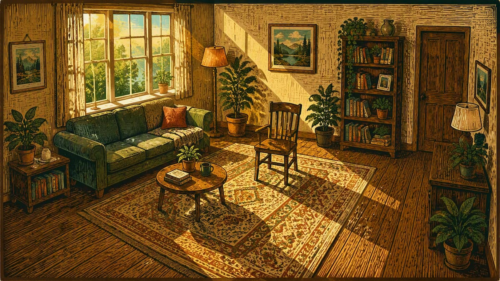
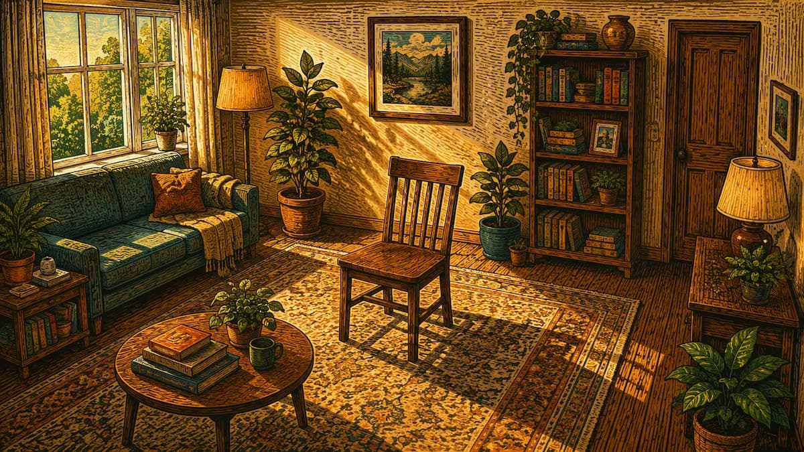
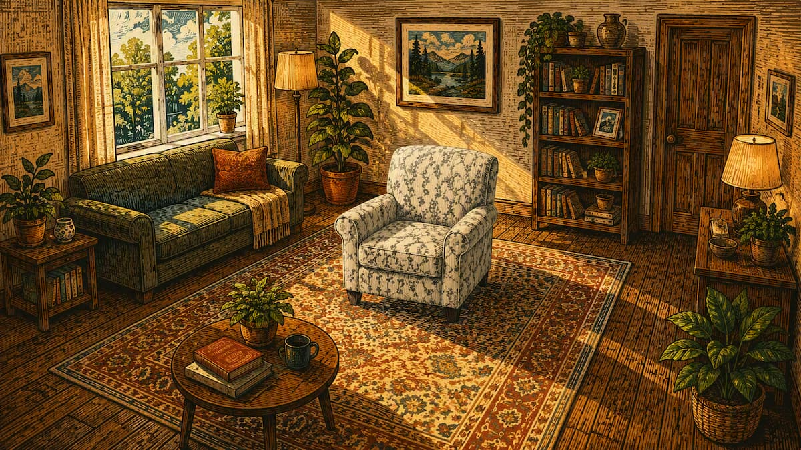
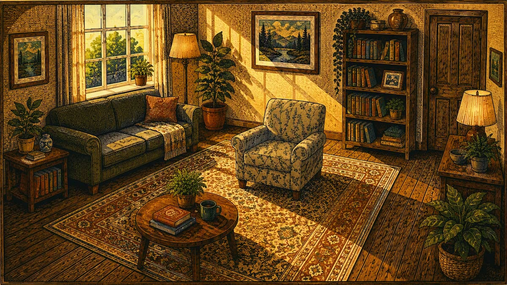
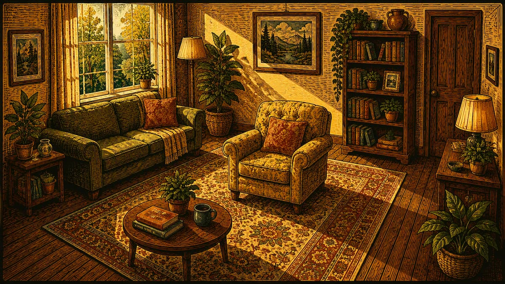

The First Prompt
a chair in the middle of a room.
A visual journey showing how iterative prompting shapes AI image generation, from a simple idea to refined, reference-driven creative direction.

a chair in the middle of a room.

a chair in the middle of a cozy living room, surrounded by a small coffee table, a lamp on the floor and a few potted plants.

add warm afternoon sunlight streaming through large windows and should create some soft shadows and a calm atmosphere. make it as a colorful woodcut print with shapes that are bold and medium, lines with texture in them and a vintage feel.

make it so that it is shot from a little bit elevated three-quarter view from across the room using wide-angle lens, entire room should be visible in a 16:9 landscape.

use the reference image attached as inspiration for the chair's shape, proportions and overall composition.

use the reference image attached as inspiration for chair's shape, proportions and overall composition.

The new chair's color should match with the tone and texture of the image as a whole. The chair's color shouldn't look completely out of place.

Rich carved-line texture, visible woodblock grain, hand-printed character, expressive hatching, and layered ink colors. Warm amber, golden yellow, terracotta, olive green, deep teal, and walnut brown dominate the palette.